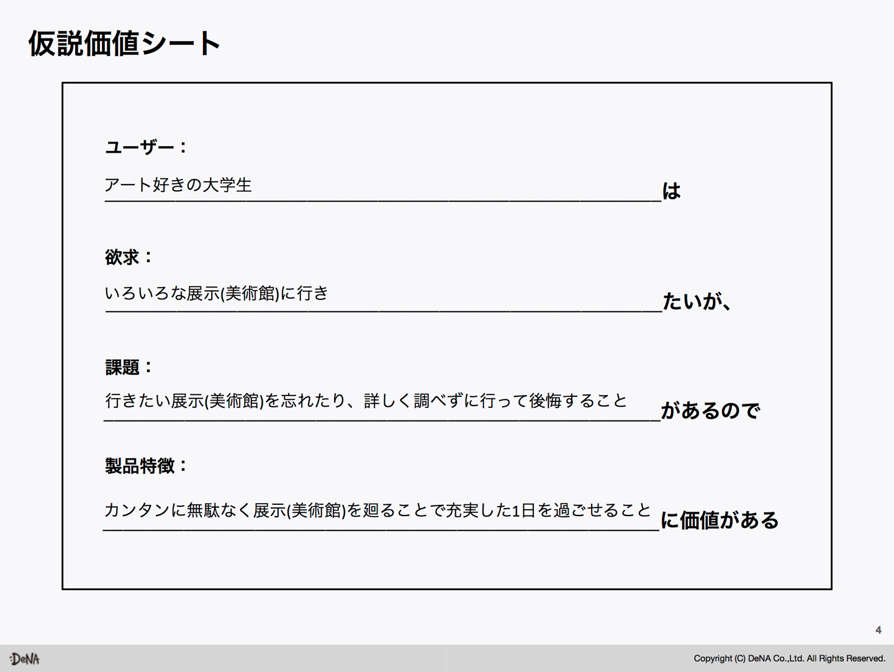
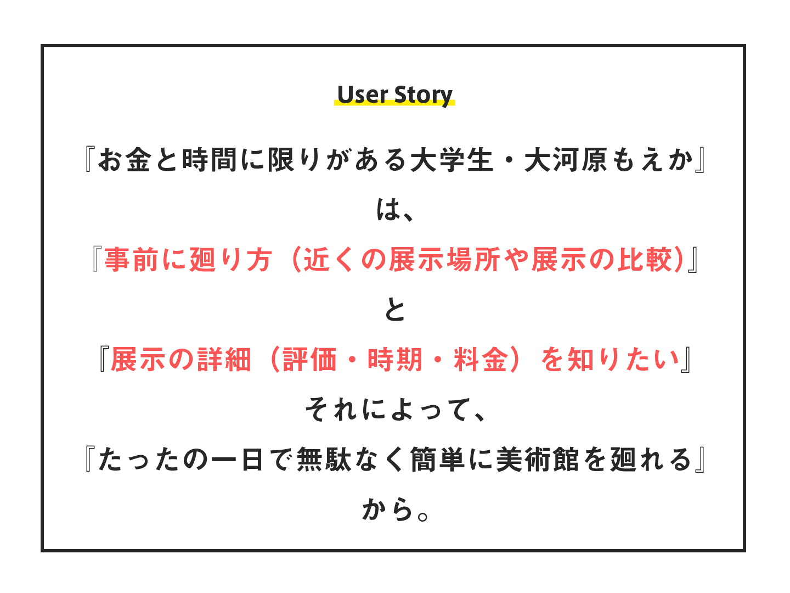
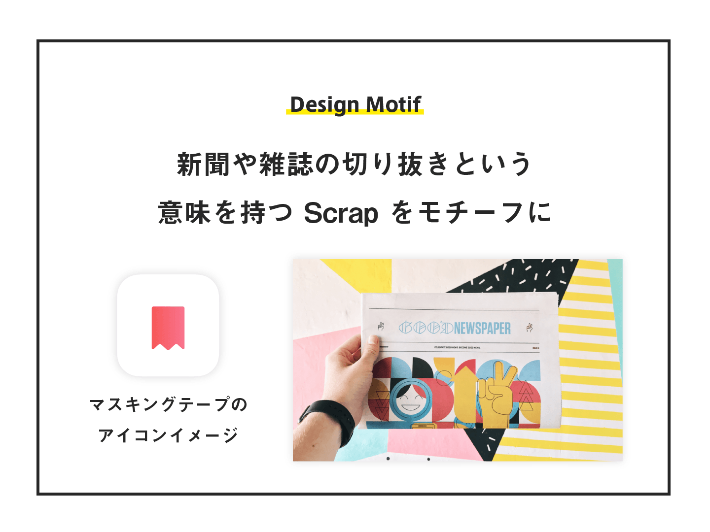
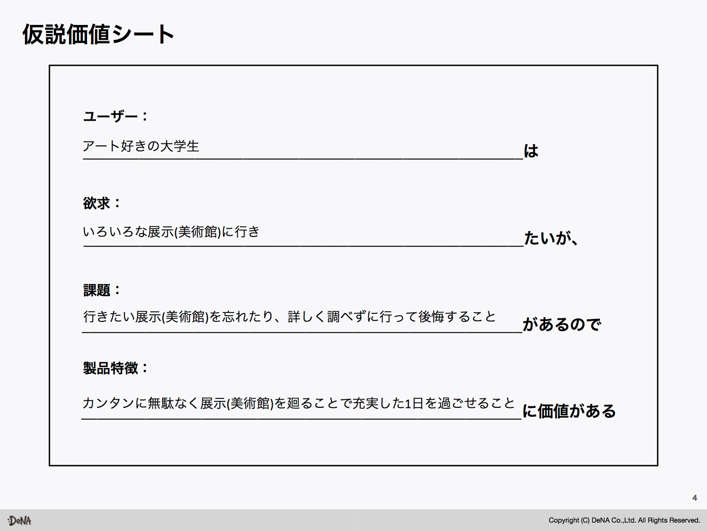
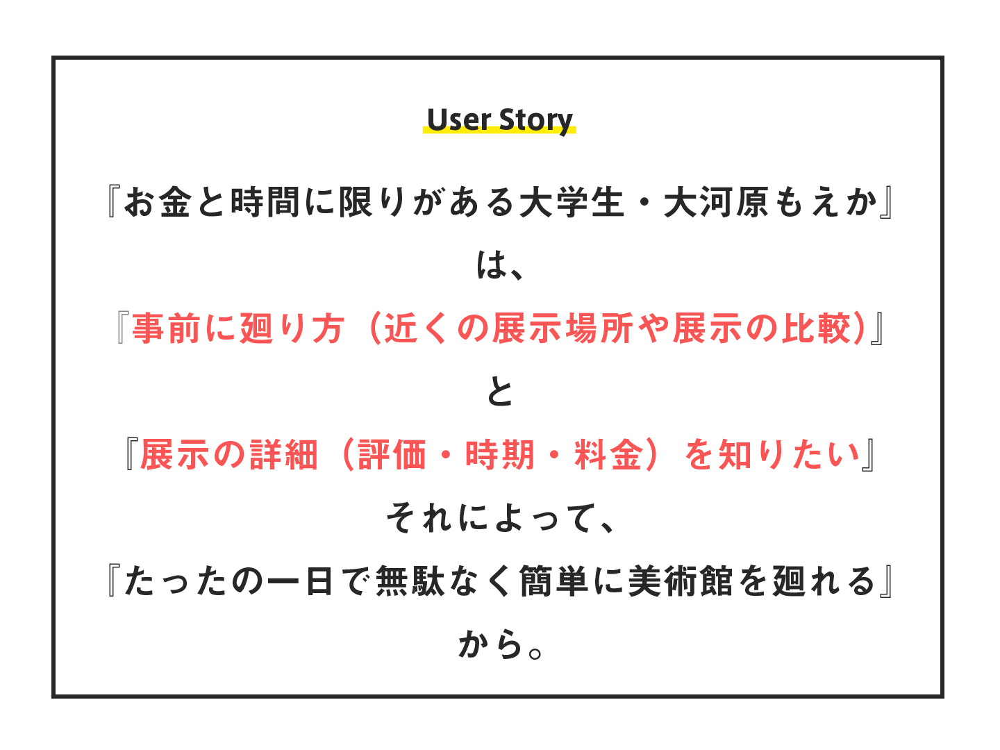
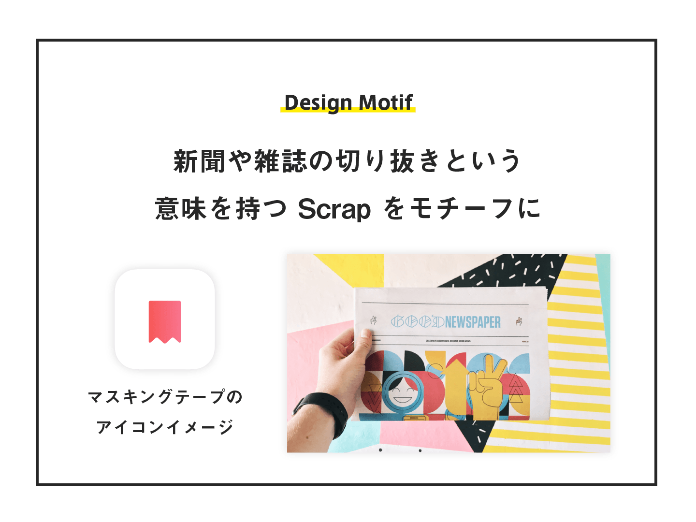
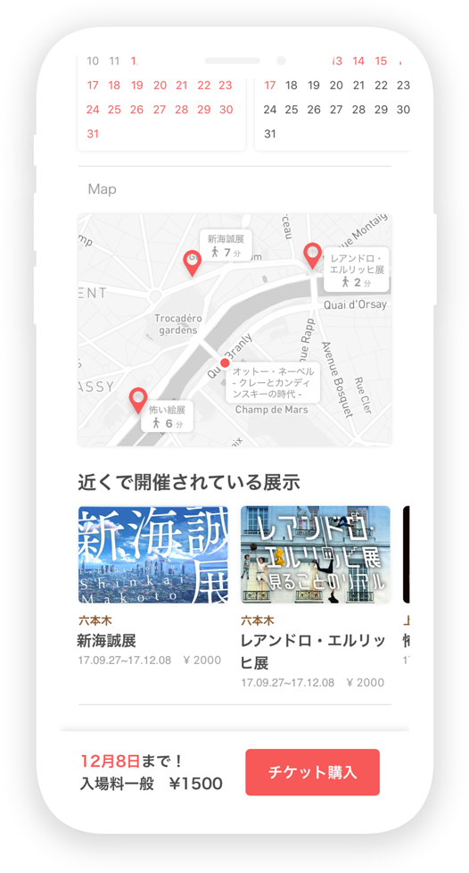
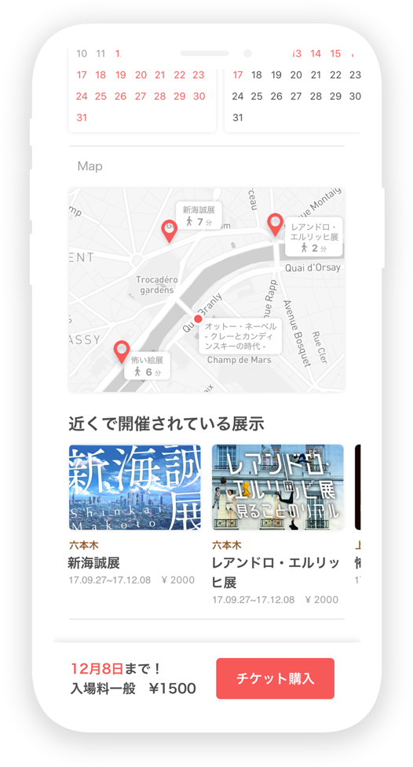
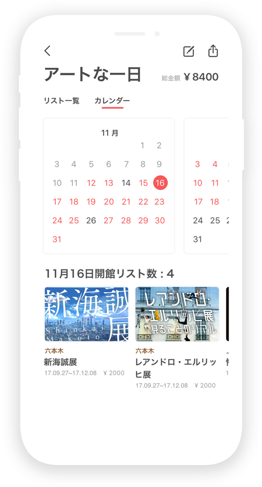
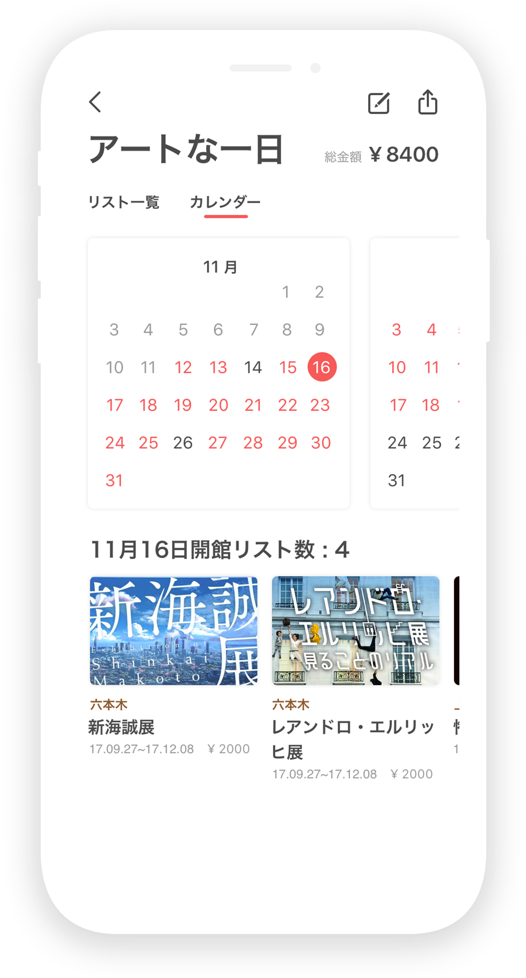

05-05
UI Design / UX Design / User-centered design(UCD)
Overview
DeNA 主催による Delight U for Student における「美術館（展示）回遊アプリ」を制作するというテーマで制作した作品です。ユーザー中心設計に基づいた、プロトタイプ開発を行いました。具体的には、与えられたペルソナ・仮設価値シートから、ユーザー体験を考えUIに落とし込みました。新聞の切り抜きという意味を持つ「Scrap」をコンセプトとし、ユーザーが美術館や展示を「発見する」「保存する」「整理する」という行動をアプリの主要機能としました。
ProjectDetails
制作日 : 2017年12月
制作期間: 2week
Tool
Sketch
Adobe Illustrator
Adobe Photoshop
Personal Work
藤木 良祐
- UI Design
- UX Design

Process
ユーザー中心設計のデザイン哲学に基づき、与えられたペルソナ・価値仮説シートからユーザーストーリーを構築しました。そしてそのユーザーゴールから、ユーザーが展示を「発見する」「保存する」「整理する」ことをアプリでの主要機能とし、ペルソナの課題を解決します。この3つの主要機能を、新聞や雑誌の切り抜きという意味を持つ Scrap をモチーフに表しました。
 





Home Tab
Homeタブはユーザーの好みの展示を発見するタブです。展示の詳細を閲覧でき、気に入った展示をボードに保存する機能を有しています。ユーザーが展示を保存したとき初めて会員登録を求めることで、ユーザーのアプリ離脱を回避します。また、Twitter,Instgram連携を取り入れることで、会員登録・ログインの過程をスムーズにします。
 

Search Tab
ユーザーが自発的に展示を探すタブ。テキスト検索だけでなく、ユーザーがより探しやすい体験を届けられるよう、カテゴリ検索やトレンド検索、さらにフィルター検索を提案しました。
Board Tab
保存した展示を整理するタブ。ユーザーがボードごとに保存した展示を閲覧、整理することができます。さらに今月に終わってしまう展示をプログラムが自動でボードを作成することで、ペルソナの抱いていた「行きたい展示を忘れてしまう」という課題を解決します。
 

The Other Works